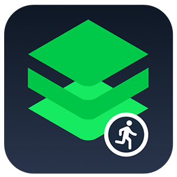

<mat-sidenav-container class="sidenav-container">
  <mat-sidenav #drawer class="sidenav" fixedInViewport="false"
    [attr.role]="(isHandset$ | async) ? 'dialog' : 'navigation'" [mode]="(isHandset$ | async) ? 'over' : 'side'"
    [opened]="(isHandset$ | async) === false">
    <mat-toolbar color="primary">Menu</mat-toolbar>
    <div>
      <mat-nav-list>
        <a mat-list-item [routerLink]="['/athletes-info']">athlete information</a>
        <a mat-list-item [routerLink]="['/medal-details']">medal details</a>
      </mat-nav-list>
    </div>
  </mat-sidenav>
  <mat-sidenav-content>
    <mat-toolbar color="primary">
      <button type="button" aria-label="Toggle sidenav" mat-icon-button (click)="drawer.toggle()">
        <mat-icon aria-label="Side nav toggle icon">menu</mat-icon>
      </button>
      <span>
        
      </span>
      <div class="mr-5" style="margin-left: 70rem;">
        <a mat-button >Name: {{ name }}</a> 
        <a mat-button >Role: {{ role }}</a> 

      </div>
      <span class="material-icons">
        logout
        </span>
      <a mat-button (click)="OnLogout()">Logout</a>   
    </mat-toolbar>
    <ng-content #name></ng-content>
  </mat-sidenav-content>
</mat-sidenav-container>